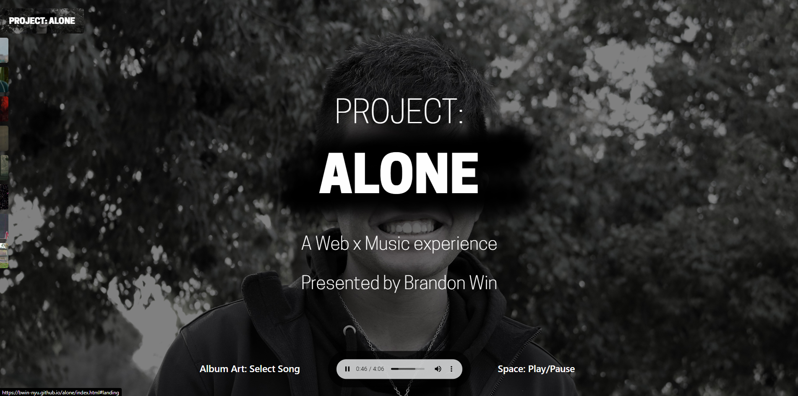

Being heavily interested in music analysis, I wanted to create some form of online project that would be able to show a variety of emotions and relate them to curated songs.
I decided to create an online website that had several songs explaining their meaning and relation to an overall arcing emotion. This website would be longform, allowing the user to scroll through the curated list.